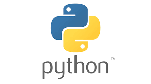

Python é uma linguagem de programação interpretada de alto nível e que suporta múltiplos paradigmas de programação: imperativo, orientado a objetos e funcional. É uma linguagem com tipagem dinâmica e gerenciamento automático de memória.Java é uma linguagem de programação orientada a objetos desenvolvida na década de 90 por uma equipe de programadores chefiada por James Gosling, na empresa Sun MicrosystemsC# é uma linguagem de programação, multiparadigma, de tipagem forte, desenvolvida pela Microsoft como parte da plataforma .NET. R é uma linguagem de programação multi-paradigma orientada a objetos, programação funcional, dinâmica, fracamente tipada, voltada à manipulação, análise e visualização de dados.